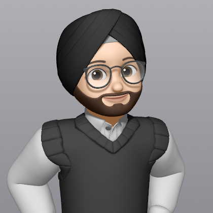

BCA AI & ML Student
Navdeep Singh
Building Learning Experimenting
I’m exploring AI, Machine Learning and software development through projects and experiments.

2024 — 2026
Practice, curiosity and ideas in progress.
Concept projects that bring together the web, programming, data and AI skills I’m actively developing.


A little more
Learning technology with curiosity and consistency.
I’m pursuing a Bachelor of Computer Applications in Artificial Intelligence and Machine Learning at Chitkara University. Alongside my degree, I’m expanding my skills through hands-on projects and focused courses in frontend development, Python, C++, SQL, NumPy, Pandas and React.
I also share reflections about student life, useful AI tools and the ideas shaping the way I learn on LinkedIn.
Learning & credentials
Certificates and achievements.
A collection of certifications across web development, programming, data, artificial intelligence and community initiatives.
| Course | About the course | Provider | Area | Completed |
|---|---|---|---|---|
| HTML & CSS Bootcamp | Learned to structure web pages with HTML and style them with CSS. | LetsUpgrade | Web development | 15 Mar 2026 |
| Python Essentials | Covered Python fundamentals including syntax, data types and core programming concepts. | Cisco Networking Academy | Programming | 20 Dec 2025 |
| Pandas | Explored working with tabular data and data analysis using Pandas. | Kaggle | Data analysis | 11 Jul 2026 |
| React Bootcamp | Introduced building interactive user interfaces with React components. | LetsUpgrade | Frontend development | 30 Mar 2026 |
| Git & GitHub Bootcamp | Covered version control with Git and managing repositories with GitHub. | LetsUpgrade | Developer tools | 28 Feb 2026 |
| C++ Advanced | Developed further programming skills using C++ and its language features. | Cisco Networking Academy | Programming | 21 Jul 2026 |
| SQL Bootcamp | Learned to query and work with data stored in relational databases. | LetsUpgrade | Databases | 14 Mar 2026 |
| Introduction to NumPy | Explored numerical computing with NumPy arrays and data operations. | Simplilearn SkillUp | Data science | 10 Jul 2026 |
| Introduction to Modern AI | An introduction to artificial intelligence and machine learning concepts. | Cisco Networking Academy | Artificial intelligence | 9 Dec 2025 |
| Introduction to Modern AI | An introduction to artificial intelligence and machine learning concepts. | Cisco Networking Academy | Artificial intelligence | 9 Dec 2025 |
| Time Management with AI | Explored using AI tools to support time management and productivity. | LinkedIn Learning | Productivity | 22 Jul 2026 |
| Build a Website with WordPress | Learned to create and publish a website using WordPress. | Coursera | Web development | 10 Jul 2026 |
| National Financial Literacy Quiz | Covered foundational topics in financial literacy. | NISM & SEBI | Financial literacy | 2026 |
| CPR Awareness Week Quiz | Completed a quiz focused on CPR and community awareness. | Ministry of Youth Affairs & Sports | Community awareness | 28 Oct 2025 |
| Nasha Mukt Bharat Abhiyaan | Recognized participation in the Nasha Mukt Bharat community initiative. | Ministry of Social Justice & Empowerment | Community initiative | Not listed |
| Nasha Mukt Yuva for Viksit Bharat | Recognized participation in a youth-led substance-free India initiative. | Ministry of Youth Affairs & Sports | Community initiative | Not listed |
Writing & ideas
Thoughts on technology and learning.
Short reflections on the tools, habits and ideas shaping how we learn and build.
LinkedIn article · AI & education
How Artificial Intelligence Is Changing the Education
System
Exploring how artificial intelligence is influencing teaching,
learning and the future of education for students and
educators.
View Article ↗
LinkedIn article · AI & learning
AI Tools Every Student Should Know
A practical look at useful AI tools that can help students
research, understand concepts, organise their work and study
more effectively.
View Article ↗
Student guide · AI & learning
How to Learn Faster Using AI
Practical strategies every student can apply to study smarter,
understand concepts deeply and use AI as a learning
partner.
View Guide ↗
LinkedIn article · Responsible AI
The Biggest Mistakes Students Make While Using AI
A look at common mistakes students make with AI and how to use
it thoughtfully as a tool for genuine learning and growth.
View Article ↗

Skills in progress
Learning by building and exploring.
My learning path combines core programming concepts with practical web development, data tools and responsible use of AI.
01
Web development
Creating responsive interfaces while strengthening the fundamentals behind modern websites and applications.
- HTML & CSS
- JavaScript
- React & WordPress
02
Programming & data
Building logical problem-solving skills and learning to work confidently with structured information.
- Python & C++
- SQL
- NumPy & Pandas
03
AI & modern tools
Exploring artificial intelligence as a practical aid for learning, productivity and future software ideas.
- AI fundamentals
- AI-assisted learning
- Productivity workflows
Learning journey
Building a broad technical foundation.
My journey combines BCA studies in AI and Machine Learning at Chitkara University, independent certifications and public reflections on what I learn.
View certificatesNow
BCA in Artificial Intelligence & Machine Learning
Chitkara University
2025 — 2026
Technical certifications
Web, programming, data and AI
2026
Writing and knowledge sharing
Student learning and AI tools
My approach
Curiosity turns learning into progress.
The principles guiding how I study technology, build practice projects and share new ideas.
“Learn the fundamentals, build something practical, then explain what you discovered.”
“Stay curious about new tools, but understand the ideas and reasoning behind them.”
Let’s connect
Learning, building or sharing an idea?
I'm happy to connect with fellow students, developers and people exploring technology and AI.
Connect on LinkedIn Open to learning and collaboration